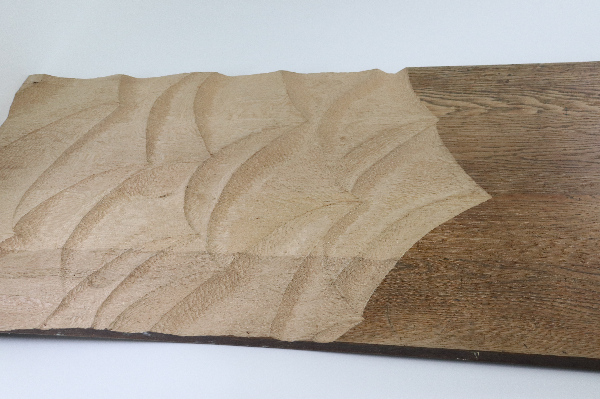
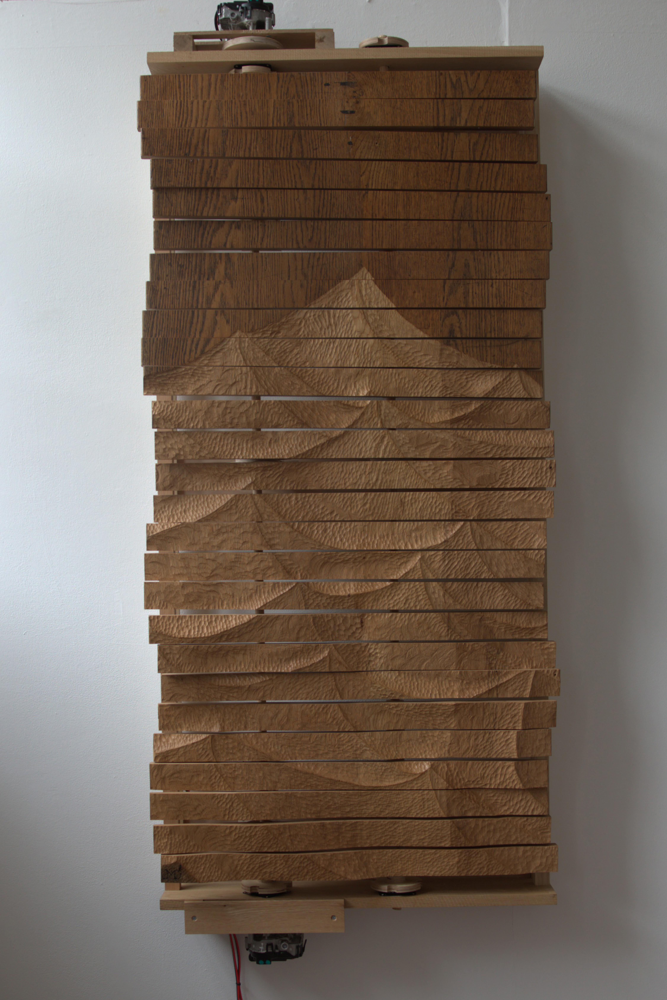

(Untitled) Wave automaton
Jan- May 2026
Made from a discarded used Oak desk, a variety of scrap and bought wood, two car windscreen wiper motors,oiled with Danish Oil.

Made from a discarded used Oak desk, a variety of scrap and bought wood, two car windscreen wiper motors,oiled with Danish Oil.



